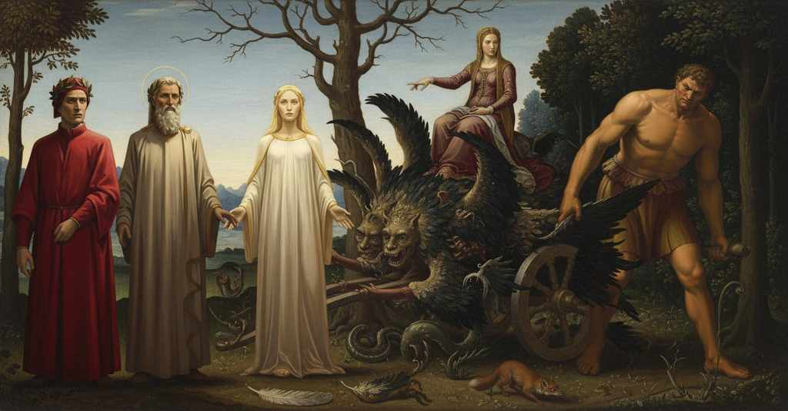

Purgatorio — Canto 32

Dopo che il Carro viene legato all'albero e Dante si risveglia da un sonno mistico, Beatrice gli comanda di osservare la serie di attacchi allegorici che lo trasformano in un mostro, infine trascinato via da una meretrice e un gigante. After the Chariot is tied to the tree and Dante awakens from a mystical sleep, Beatrice commands him to observe the series of allegorical attacks that transform it into a monster, finally dragged away by a prostitute and a giant. 凱旋車が木に結びつけられ、ダンテが神秘的な眠りから覚めると、ベアトリーチェは彼に、凱旋車が怪物へと変貌し、ついには娼婦と巨人に引きずり去られる一連の寓意的な攻撃を観察するよう命じる。
1
Tant’ eran li occhi miei fissi e attenti
So fixed and attentive were my eyes
私の目はそれほどまでに、じっと一心に注がれ
2
a disbramarsi la decenne sete,
to slake their ten-year thirst,
十年間の渇きを癒そうとしていたので、
3
che li altri sensi m’eran tutti spenti.
that all my other senses were extinct.
他の感覚はすべて私の中で消え果てていた。
4
Ed essi quinci e quindi avien parete
And they on this side and on that had a wall
そしてそれら（目）は、こちらにもあちらにも壁を巡らし
5
di non caler—così lo santo riso
of indifference—so her holy smile
他を顧みなかった――かくも聖なる微笑みは
6
a sé traéli con l’antica rete!—;
drew them to itself with the old net!—;
古の網で、自らへとそれを引き寄せていたのだ！――
7
quando per forza mi fu vòlto il viso
when by force my face was turned
その時、無理やり私の顔は向けさせられた、
8
ver’ la sinistra mia da quelle dee,
toward my left by those goddesses,
かの女神たちによって私の左の方へと。
9
perch’ io udi’ da loro un «Troppo fiso!»;
because I heard from them a 'Too fixedly!';
なぜなら私は彼女たちから「見つめすぎです！」と聞いたからだ。
10
e la disposizion ch’a veder èe
and the condition that one sees
そして、見られるあの状態が
11
ne li occhi pur testé dal sol percossi,
in eyes just now struck by the sun,
つい先ほど太陽に打たれたばかりの目に、
12
sanza la vista alquanto esser mi fée.
caused me to be for a while without sight.
しばらくの間、私を視力のないものにした。
13
Ma poi ch’al poco il viso riformossi
But when my vision was reformed to the lesser light
しかし、視力がより弱い光に再び慣れると
14
(e dico ‘al poco’ per rispetto al molto
(and I say 'lesser' in respect to the great
（そして私が「より弱い光に」と言うのは、大いなる
15
sensibile onde a forza mi rimossi),
radiance from which I had by force removed myself),
感覚の対象、そこから私が無理に離されたものに対してであり）、
16
vidi ’n sul braccio destro esser rivolto
I saw turned upon its right flank
私は右の方へと向きを変えたのを見た、
17
lo glorïoso essercito, e tornarsi
the glorious army, and returning
栄光の軍勢が。そして引き返していくのを、
18
col sole e con le sette fiamme al volto.
with the sun and the seven flames at its face.
太陽と七つの炎を顔に向けて。
19
Come sotto li scudi per salvarsi
As a troop under its shields, to save itself,
盾の下で身を守るために
20
volgesi schiera, e sé gira col segno,
wheels, and turns itself with the standard,
部隊が向きを変え、旗と共に回転し、
21
prima che possa tutta in sé mutarsi;
before it can completely change its formation;
完全に隊形を変え終える前に、
22
quella milizia del celeste regno
that soldiery of the celestial kingdom
天の王国のその軍団は、
23
che procedeva, tutta trapassonne
which was in the vanguard, all passed by us
先を進んでいたが、すべてが通り過ぎた、
24
pria che piegasse il carro il primo legno.
before the chariot bent its first pole.
凱旋車がその轅を曲げるよりも先に。
25
Indi a le rote si tornar le donne,
Then to the wheels the ladies returned,
それから貴婦人たちは車輪のもとへ戻り、
26
e ’l grifon mosse il benedetto carco
and the griffin moved the blessed cargo
そしてグリフォンは祝福された荷を動かした、
27
sì, che però nulla penna crollonne.
so that not a single feather of it shook.
それによっていかなる羽根も揺れることのないように。
28
La bella donna che mi trasse al varco
The lovely lady who drew me through the ford
私を渡し場へと引いた美しい貴婦人と
29
e Stazio e io seguitavam la rota
and Statius and I followed the wheel
スタティウスと私は、車輪の後を追った、
30
che fé l’orbita sua con minore arco.
that made its orbit with the smaller arc.
より小さい弧を描いて軌道を進む方の。
31
Sì passeggiando l’alta selva vòta,
Thus, walking through the high, empty wood,
かくして、空となった高き森を歩みながら、
32
colpa di quella ch’al serpente crese,
the fault of her who believed the serpent,
蛇を信じた女の罪によって、
33
temprava i passi un’angelica nota.
an angelic melody tempered our steps.
天使の歌声が歩みを和らげていた。
34
Forse in tre voli tanto spazio prese
Perhaps in three flights an unbridled arrow
おそらく放たれた矢が三度飛ぶほどの
35
disfrenata saetta, quanto eramo
took as much space as we had
距離を、私たちは
36
rimossi, quando Bëatrice scese.
moved, when Beatrice descended.
進んだだろうか、その時ベアトリーチェは降りた。
37
Io senti’ mormorare a tutti «Adamo»;
I heard them all murmur “Adam”;
私は皆が「アダム」と呟くのを聞いた。
38
poi cerchiaro una pianta dispogliata
then they circled a plant stripped
そして彼らは葉を剥ぎ取られた一本の木を囲んだ、
39
di foglie e d’altra fronda in ciascun ramo.
of leaves and of other foliage on every branch.
どの枝にも葉や他の枝葉がない木を。
40
La coma sua, che tanto si dilata
Its crown, which so greatly spreads out
その梢は、高く上るほどに
41
più quanto più è sù, fora da l’Indi
the higher up it is, would be by the Indians
ますます広がり、インドの者たちでさえ
42
ne’ boschi lor per altezza ammirata.
in their forests admired for its height.
その森でその高さに感嘆するだろう。
43
«Beato se’, grifon, che non discindi
“Blessed are you, Griffin, who do not break off
「幸いなるかな、グリフォンよ、汝は引き裂かぬゆえに
44
col becco d’esto legno dolce al gusto,
with your beak from this wood sweet to the taste,
その嘴で、この味わい甘き木を、
45
poscia che mal si torce il ventre quindi».
since the belly is badly twisted by it.”
それゆえに腹はひどくねじれるのだから」。
46
Così dintorno a l’albero robusto
Thus around the robust tree
かくして頑丈な木の周りで
47
gridaron li altri; e l’animal binato:
cried the others; and the two-natured animal:
他の者たちは叫んだ。そして二つの本性を持つ獣は、
48
«Sì si conserva il seme d’ogne giusto».
“Thus is preserved the seed of all justice.”
「かくして全ての正義の種は保たれる」。
49
E vòlto al temo ch’elli avea tirato,
And turned to the pole that he had drawn,
そして自らが引いてきた轅（ながえ）の方を向くと、
50
trasselo al piè de la vedova frasca,
he dragged it to the foot of the widowed branch,
それを未亡人の枝の足元へ引き寄せ、
51
e quel di lei a lei lasciò legato.
and that which came from it he left bound to it.
その木から出たものをその木に結びつけた。
52
Come le nostre piante, quando casca
As our plants, when there falls
我々の植物が、大いなる光が
53
giù la gran luce mischiata con quella
down the great light mixed with that
天のラスカの後ろで輝く
54
che raggia dietro a la celeste lasca,
which radiates behind the celestial fish,
光と混じり合って降り注ぐ時、
55
turgide fansi, e poi si rinovella
become turgid, and then each one renews itself
膨らみ、そして再び新しくなるように、
56
di suo color ciascuna, pria che ’l sole
with its own color, before the sun
それぞれがその色に、太陽が
57
giunga li suoi corsier sotto altra stella;
harnesses his coursers beneath another star;
その駿馬を別の星の下に繋ぐ前に、
58
men che di rose e più che di vïole
less than of rose and more than of violet
薔薇よりも淡く、菫よりも濃い
59
colore aprendo, s’innovò la pianta,
opening a color, the plant was renewed,
色を開いて、その木は新しくなった、
60
che prima avea le ramora sì sole.
which before had its boughs so bare.
それまではその枝々がかくも寂しかった木が。
61
Io non lo ’ntesi, né qui non si canta
I did not understand it, nor is it sung here,
私はそれを理解せず、またここ（地上）では歌われぬ、
62
l’inno che quella gente allor cantaro,
the hymn that those people then sang,
その人々がその時歌った賛歌を、
63
né la nota soffersi tutta quanta.
nor did I endure the whole melody.
またその旋律を最後まで耐え忍ぶこともなかった。
64
S’io potessi ritrar come assonnaro
If I could portray how they were lulled to sleep,
もし私が描くことができたなら、いかにして眠りに落ちたかを、
65
li occhi spietati udendo di Siringa,
the pitiless eyes hearing of Syrinx,
シリンクスの話を聞いて無慈悲な目が、
66
li occhi a cui pur vegghiar costò sì caro;
the eyes for whom staying awake cost so dear;
目覚めていることさえ、かくも高くついた目が。
67
come pintor che con essempro pinga,
like a painter who paints from a model,
模範をもって描く画家の如く、
68
disegnerei com’ io m’addormentai;
I would draw how I fell asleep;
私がいかに眠りについたかを描写するであろう。
69
ma qual vuol sia che l’assonnar ben finga.
but let him be who he may who can depict sleeping well.
だが眠りをうまく装える者などいるだろうか。
70
Però trascorro a quando mi svegliai,
Therefore I pass on to when I awoke,
ゆえに私は目覚めた時に飛び、
71
e dico ch’un splendor mi squarciò ’l velo
and I say that a splendor tore the veil
そして言う、一つの輝きが私の眠りの
72
del sonno, e un chiamar: «Surgi: che fai?».
of my sleep, and a call: “Arise: what are you doing?”.
帳を引き裂き、そして「起きよ、何をしている？」という呼び声が、と。
73
Quali a veder de’ fioretti del melo
As those who, at seeing the little flowers of the apple tree
林檎の木の小花を見るように、
74
che del suo pome li angeli fa ghiotti
that makes the angels greedy for its fruit
その果実ゆえに天使たちを渇望させ、
75
e perpetüe nozze fa nel cielo,
and makes perpetual wedding feasts in heaven,
天において永遠の婚礼を執り行うかの花を、
76
Pietro e Giovanni e Iacopo condotti
Peter and John and James, led
ペテロとヨハネとヤコブは導かれ、
77
e vinti, ritornaro a la parola
and overcome, returned to the word
打ち負かされ、かの御言葉のもとに戻った、
78
da la qual furon maggior sonni rotti,
by which greater sleeps were broken,
それによって、より大いなる眠りも破られたのだ、
79
e videro scemata loro scuola
and saw their company diminished
そして、彼らの仲間が減っているのを見た、
80
così di Moïsè come d’Elia,
as much of Moses as of Elijah,
モーセもエリヤも同じく、
81
e al maestro suo cangiata stola;
and their master's garment changed;
そして師の衣が変わったのを。
82
tal torna’ io, e vidi quella pia
so I returned, and I saw that pious lady
そのように私は戻り、あの敬虔な女が
83
sovra me starsi che conducitrice
standing over me, she who was the guide
私の上に立っているのを見た、彼女は導き手として
84
fu de’ miei passi lungo ’l fiume pria.
of my steps along the river before.
先に川に沿って私の歩みを導いた者であった。
85
E tutto in dubbio dissi: «Ov’ è Beatrice?».
And all in doubt I said: “Where is Beatrice?”.
そしてすっかり疑いのうちに私は言った、「ベアトリーチェはどこに？」。
86
Ond’ ella: «Vedi lei sotto la fronda
At which she: “See her beneath the foliage
すると彼女は、「見なさい、彼女を、新しい葉叢の下に、
87
nova sedere in su la sua radice.
new, sitting upon its root.
その根の上に座っているのを。
88
Vedi la compagnia che la circonda:
See the company that surrounds her:
彼女を囲む仲間を見なさい、
89
li altri dopo ’l grifon sen vanno suso
the others behind the griffin go on high
他の者たちはグリフォンの後を上へと去って行く、
90
con più dolce canzone e più profonda».
with a song more sweet and more profound.”
より甘美な、より深遠な歌とともに」。
91
E se più fu lo suo parlar diffuso,
And if her speech was more diffuse,
そして、もし彼女の言葉がさらに続いたとしても、
92
non so, però che già ne li occhi m’era
I do not know, for already in my eyes was
私は知らない、なぜならすでに私の目の中にはあったのだから、
93
quella ch’ad altro intender m’avea chiuso.
she who had closed me to any other understanding.
他のことを理解するのを私に閉ざしてしまった彼女が。
94
Sola sedeasi in su la terra vera,
Alone she was sitting on the true earth,
彼女は一人、真の大地の上に座っていた、
95
come guardia lasciata lì del plaustro
like a guard left there of the chariot
車の番人としてそこに残されたかのように、
96
che legar vidi a la biforme fera.
that I saw the two-formed beast tie.
その車は、二つの姿を持つ獣に結ばれるのを私が見たものだ。
97
In cerchio le facevan di sé claustro
In a circle they made of themselves a cloister for her,
輪になって、彼女を囲む回廊をなしていたのは、
98
le sette ninfe, con quei lumi in mano
the seven nymphs, with those lights in hand
かの七人のニンフたち、その手にあの光を携え、
99
che son sicuri d’Aquilone e d’Austro.
that are safe from the North Wind and the South Wind.
その光は北風からも南風からも安全である。
100
«Qui sarai tu poco tempo silvano;
“Here you will be for a short time a forest-dweller;
「ここでは汝は僅かな間、森の者となるだろう、
101
e sarai meco sanza fine cive
and you will be with me without end a citizen
そして私と共に、終わることなく市民となるだろう、
102
di quella Roma onde Cristo è romano.
of that Rome where Christ is a Roman.
キリストがローマ人であるかのローマの。
103
Però, in pro del mondo che mal vive,
Therefore, for the good of the world that lives ill,
それゆえ、悪しく生きる世の益のために、
104
al carro tieni or li occhi, e quel che vedi,
keep your eyes now on the chariot, and what you see,
車に今や目を向けよ、そして汝が見るものを、
105
ritornato di là, fa che tu scrive».
when you have returned yonder, make sure that you write.”
かの地に戻ったなら、汝が書くようにせよ」。
106
Così Beatrice; e io, che tutto ai piedi
Thus Beatrice; and I, who wholly at the feet
このようにベアトリーチェは言った。そして私は、すっかり足元に
107
d’i suoi comandamenti era divoto,
of her commands was devout,
彼女の命令に献身的であった私は、
108
la mente e li occhi ov’ ella volle diedi.
turned my mind and my eyes where she willed.
心と目を、彼女が望んだところへと向けた。
109
Non scese mai con sì veloce moto
Never descended with so swift a motion
それほど速い動きで下ったことはなかった
110
foco di spessa nube, quando piove
fire from a thick cloud, when it rains
濃い雲の火が、雨の降る時
111
da quel confine che più va remoto,
from that region which is most remote,
最も遠い天涯から、
112
com’ io vidi calar l’uccel di Giove
as I saw descend the bird of Jove
私がユピテルの鳥が下るのを見たほどには
113
per l’alber giù, rompendo de la scorza,
down through the tree, breaking off the bark,
木を伝って下り、その樹皮を砕き、
114
non che d’i fiori e de le foglie nove;
not to mention the flowers and the new leaves;
新しい花々や葉はもとよりのこと、
115
e ferì ’l carro di tutta sua forza;
and it struck the chariot with all its force;
そして凱旋車をその全力で打ち、
116
ond’ el piegò come nave in fortuna,
at which it reeled like a ship in a storm,
そのためそれは嵐の中の船のように傾いた、
117
vinta da l’onda, or da poggia, or da orza.
overcome by the waves, now to starboard, now to port.
波に打ち負かされ、あるときは右舷に、あるときは左舷に。
118
Poscia vidi avventarsi ne la cuna
Then I saw leap into the cradle
次に私は、揺り籠の中に飛びかかるのを見た
119
del trïunfal veiculo una volpe
of the triumphal vehicle a fox
凱旋車の、一匹の狐を
120
che d’ogne pasto buon parea digiuna;
that seemed starved of all good food;
あらゆる善き糧に飢えているようだった。
121
ma, riprendendo lei di laide colpe,
but, rebuking it for its ugly sins,
しかし、彼女を醜い罪で咎めながら、
122
la donna mia la volse in tanta futa
my lady turned it to such flight
我が貴婦人は彼女を大急ぎで逃走させた
123
quanto sofferser l’ossa sanza polpe.
as its fleshless bones allowed.
肉なき骨が耐える限り。
124
Poscia per indi ond’ era pria venuta,
Then, by the way it had first come,
次に、先に来たその場所を通って、
125
l’aguglia vidi scender giù ne l’arca
I saw the eagle descend into the ark
鷲が凱旋車の櫃の中に下り、
126
del carro e lasciar lei di sé pennuta;
of the chariot and leave it feathered with its plumes;
自らの羽でそれを覆うのを見た。
127
e qual esce di cuor che si rammarca,
and such as issues from a heart that grieves,
そして嘆き悲しむ心から発せられるような、
128
tal voce uscì del cielo e cotal disse:
such a voice came from heaven and said thus:
そんな声が天から発せられ、こう言った、
129
«O navicella mia, com’ mal se’ carca!».
“O my little ship, how ill you are laden!”.
「おお、我が小舟よ、なんとお前は悪しく荷を負っていることか！」。
130
Poi parve a me che la terra s’aprisse
Then it seemed to me that the earth opened
それから私には、大地が開けたように思われた
131
tr’ambo le ruote, e vidi uscirne un drago
between the two wheels, and I saw a dragon come out of it
両輪の間に、そしてそこから一頭の竜が出てくるのを見た
132
che per lo carro sù la coda fisse;
that up through the chariot fixed its tail;
それは凱旋車を貫いてその尾を突き刺した。
133
e come vespa che ritragge l’ago,
and like a wasp that retracts its sting,
そして針を引き戻す蜂のように、
134
a sé traendo la coda maligna,
drawing its wicked tail to itself,
その邪悪な尾を己の方へ引き寄せながら、
135
trasse del fondo, e gissen vago vago.
it tore out part of the floor, and went its wandering way.
底の一部を引き剥がし、さまよい去っていった。
136
Quel che rimase, come da gramigna
That which remained, as from couch-grass
残ったものは、宿根草から生えるように
137
vivace terra, da la piuma, offerta
living earth, from the plumage, offered
沃土が、その羽毛から、捧げられた
138
forse con intenzion sana e benigna,
perhaps with a sound and benign intention,
おそらくは健全で慈悲深い意図で、
139
si ricoperse, e funne ricoperta
recovered itself, and was recovered
覆われ、そして覆われたのは
140
e l’una e l’altra rota e ’l temo, in tanto
both the one and the other wheel and the pole, in so short a time
両の車輪と轅であり、それは溜息が
141
che più tiene un sospir la bocca aperta.
that a sigh holds the mouth open longer.
口を開けているよりも短い時間であった。
142
Trasformato così ’l dificio santo
Transformed thus, the holy edifice
このように変貌した聖なる建物は
143
mise fuor teste per le parti sue,
put forth heads from its parts,
その各部分に頭を突き出した、
144
tre sovra ’l temo e una in ciascun canto.
three upon the pole and one on each corner.
轅の上に三つ、そして各角に一つ。
145
Le prime eran cornute come bue,
The first were horned like an ox,
最初の三つは雄牛のように角があり、
146
ma le quattro un sol corno avean per fronte:
but the four had a single horn on their foreheads:
しかし四つは額に一本の角だけがあった。
147
simile mostro visto ancor non fue.
a similar monster had never yet been seen.
このような怪物は未だかつて見られなかった。
148
Sicura, quasi rocca in alto monte,
Secure, like a fortress on a high mountain,
高山の砦のごとく、堂々と、
149
seder sovresso una puttana sciolta
sitting upon it a shameless whore
その上に座る淫らな娼婦が
150
m’apparve con le ciglia intorno pronte;
appeared to me, with eyes quick to wander;
私に現れ、周囲に素早く目を配っていた。
151
e come perché non li fosse tolta,
and as if so that she not be taken from him,
そして彼女が奪われぬようにと、
152
vidi di costa a lei dritto un gigante;
I saw standing at her side a giant;
彼女の傍らに立つ一人の巨人を私は見た。
153
e basciavansi insieme alcuna volta.
and they kissed each other at times.
そして時折互いに口づけを交わしていた。
154
Ma perché l’occhio cupido e vagante
But because her greedy and wandering eye
しかし、その貪欲でさまよう目を
155
a me rivolse, quel feroce drudo
she turned on me, that ferocious lover
私に向けたため、その獰猛な情夫は
156
la flagellò dal capo infin le piante;
flogged her from head to foot;
彼女を頭から足の裏まで鞭打った。
157
poi, di sospetto pieno e d’ira crudo,
then, full of suspicion and cruel with wrath,
それから、猜疑に満ち、生の怒りに駆られ、
158
disciolse il mostro, e trassel per la selva,
he unbound the monster, and dragged it through the wood,
その怪物を解き放ち、森の中へと引きずっていった、
159
tanto che sol di lei mi fece scudo
so far that of it he made a shield for me
それ（森）だけが、私から盾となるまで
160
a la puttana e a la nova belva.
to the whore and to the new beast.
かの娼婦と新たな獣を隠す。